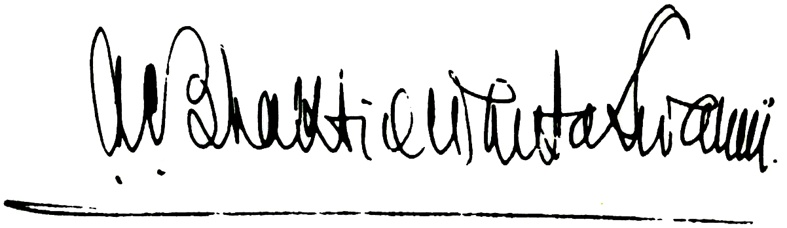

คำนำจากผู้จัดพิมพ์
ถึงแม้ว่าหนังสือ ภควัท-คีตา จะได้รับความนิยมจากการพิมพ์และการอ่านอย่างแพร่หลาย เดิมทีเป็นตอนหนึ่งของ มหาภารต ซึ่งเป็นวรรณกรรมประวัติศาสตร์ภาษาสันสกฤตของโลกในอดีต มหาภารต กล่าวถึงสถานการณ์ซึ่งนําเ ราม าสู่ยุคปัจจุบันคือ กลิ ยุค (กลิ-ยุค) ซึ่งเป็นจุดเริ่มต้นของยุคนี้ กลิ ยุค เริ่มขึ้นเมื่อประมาณห้าพันปีก่อน องค์ ศฺรี กฺฤษฺณ ตรัส ภควัท-คีตา ให้แก่ อรฺชุน ผู้ทรงเป็นทั้งสหายและสาวกของพระองค์
การสนทนาครั้งนี้เป็นการสนทนาปรัชญาและธรรมะอันยิ่งใหญ่ที่สุดที่มนุษย์เคยรู้จักมา ปรากฏขึ้นก่อนเกิดสงค ราม อย่างรุนแรงในราชวงศ์ กฺษตฺริย ระหว่างโอรสหนึ่งร้อยองค์ของ ธฺฤตราษฺฏฺร และฝ่ายตรงข้าม ปาณฺฑว โอรสของ ปาณฺฑุ ผู้เป็นญาติกัน
ธฺฤตราษฺฏฺร และ ปาณฺฑุ ทรงเป็นพี่น้องกัน ประสูติในราชวงศ์ กุรุ สืบเชื้อสายมาจากพระราชา ภรต ะผู้ทรงปกครองโลกในอดีต พระนาม มหาภารต มาจากพระราชาองค์นี้ เนื่องจาก ธฺฤตราษฺฏฺร ทรงเป็นพระเชษฐา ประสูติมามีพระเนตรพิการ บัลลังก์ซึ่งควรจะเป็นของพระองค์จึงตกมาเป็นของพระอนุชา ปาณฺฑุ
เมื่อ ปาณฺฑุ สวรรคตในขณะที่พระชันษายังไม่มาก โอรสห้าพระองค์ คือ ยุธิษฺฐิร ภีม อรฺชุน นกุล และ สหเทว ทรงมาอยู่ภายใต้การดูแลของดริทะราช-ทระ ผู้ทรงขึ้นครองราชย์แทน ปาณฺฑุ ดังนั้น พระโอรสของ ธฺฤตราษฺฏฺร และพระโอรสของ ปาณฺฑุ ทรงเจริญเติบโตในพระราชวังเดียวกัน ทั้งสองราชวงศ์ได้รับการฝึกฝนศิลปะการทําศึกสงค ราม จากพระอาจารย์ผู้ชํานาญ โทฺรณ และมีพระอัยกา ภีษฺม ที่เคารพนับถือทรงเป็นผู้ให้คําปรึกษา
แต่พระโอรสของ ธฺฤตราษฺฏฺร โดยเฉพาะองค์โตสุด ทุโรฺยธน ทรงมีความเกลียดชังและอิจฉา ปาณฺฑว ธฺฤตราษฺฏฺร ผู้ทรงมีพระเนตรบอดและจิตใจอ่อนแอทรงประสงค์ให้โอรสของพระองคขึ้นครองราชย์แทน ปาณฺฑว
เมื่อได้รับอนุญาตจาก ธฺฤตราษฺฏฺร ทุโรฺยธน จึงวางแผนสังหารโอรสทั้งหมดของ ปาณฺฑุ แต่เสด็จอา วิทุร และ กฺฤษฺณ ผู้ทรงเป็นพระญาติคอยระวังปกป้อง ปาณฺฑว จึงรอดพ้นจากการลอบปลงพระชนม์หลายครั้ง
ศฺรี กฺฤษฺณ ทรงมิใช่เป็นบุคคลธรรมดาสามัญ แต่ทรงเป็นองค์ ภควานฺ เสด็จลงมาบนโลกนี้และทรงแสดงบทบาทเป็นเจ้าชายร่วมสมัย ในบทบาทนี้พระองค์ทรงเป็นหลานของพระนาง กุนฺตี หรือพระนาง ปฺฤถา มเหสีของ ปาณฺฑุ และพระมารดาของ ปาณฺฑว ดังนั้น ทั้งสององค์ทรงเป็นญาติกัน และทรงเป็นผู้ทํานุบํารุงพระศาสนานิรันดร กฺฤษฺณ ทรงโปรดโอรสของ ปาณฺฑุ ผู้ทรงคุณธรรม จึงทรงให้ความคุ้มครอง
ในที่สุด ทุโรฺยธน ผู้ฉลาดแกมโกงทรงท้าทาย ปาณฺฑว มาเล่นเกมการพนัน ดุร-โยดะนะและพระอนุชาได้รับชัยชนะ พระนาง เทฺราปที พระชายาผู้บริสุทธิ์และจงรักภักดีของ ปาณฺฑว ทรงตกเป็นเหยื่อจากการพนันในครั้งนี้ โดยถูกสบประมาทด้วยการพยายามเปลื้องผ้านางต่อหน้าที่ชุมนุมของเจ้าชายและ กฺษตฺริย ทั้งหลาย พลังอํานาจทิพย์ของ กฺฤษฺณ ทรงส่งส่าหรีช่วย เทฺราปที มากเท่าที่ถูกเปลื้องออก แต่การพนันที่มีแผนฉ้อโกงไว้ล่วงหน้าได้โกงเอาราชอาณาจักรของ ปาณฺฑว และเนรเทศโอรสของ ปาณฺฑุ ทั้งห้าให้ไปอยู่ในป่าเป็นเวลาสิบสามปี
หลังจากพ้นกําหนดการเนรเทศ ปาณฺฑว ทรงขอราชอาณาจักรซึ่งเป็นสิทธิ์ของพวกตนที่ควรจะได้รับ แต่ ทุโรฺยธน ทรงปฏิเสธอย่างไม่ใยดี ในฐานะที่เป็นโอรส กฺษตฺริย จึงทรงมีหน้าที่ที่จะต้องรับใช้ด้วยการปกครองบ้านเมือง ปาณฺฑว ทั้งห้าจึงทรงขอเพียงห้าหมู่บ้านมาปกครอง แต่ ทุโรฺยธน ทรงปฏิเสธอย่างยโสโอหังว่าจะไม่ให้แม้แต่ที่ดินพอที่จะเอาไปปักเข็ม
ทั้งหมดนี้ ปาณฺฑว ทรงพยายามอดทนและอดกลั้นมาตลอด แต่ครั้งนี้ดูเหมือนว่าสงค ราม จะเป็นสิ่งที่หลีกเลี่ยงไม่ได้
อย่างไรก็ดี ขณะที่เจ้าชายต่าง ๆ ในโลกต่างแบ่งพวกกัน บ้างไปร่วมกับโอรสของ ธฺฤตราษฺฏฺร บ้างไปร่วมกับ ปาณฺฑว กฺฤษฺณ ทรงแสดงบทเป็นทูตสันติภาพให้โอรสของ ปาณฺฑุ โดยเสด็จไปที่ราชสํานักของ ธฺฤตราษฺฏฺร เจรจาสันติวิธีเพื่อสงบศึก แต่เมื่อคําขอร้องของ กฺฤษฺณ ทรงถูกปฏิเสธสงค ราม จึงต้องเกิดขึ้นอย่างแน่นอน
ปาณฺฑว ผู้มีคุณธรรมอันสูงส่ง ทรงทราบดีว่า กฺฤษฺณ คือบุคลิกภาพสูงสุดแห่งพระเจ้า ขณะที่ผู้มีบาปหนาเยี่ยงเหล่าโอรสของ ธฺฤตราษฺฏฺร ไม่เชื่อเช่นนั้น ถึงกระนั้น กฺฤษฺณ ทรงเสนอที่จะร่วมรบด้วยตามที่ผู้ไม่มีความศรัทธาปรารถนา ในฐานะที่ กฺฤษฺณ ทรงเป็นองค์ ภควานฺ จะทรงไม่รบด้วยพระองค์เอง หากฝ่ายใดปรารถนาจะได้กองทัพของพระองค์ไป อีกฝ่ายหนึ่งก็จะได้ กฺฤษฺณ มาเป็นที่ปรึกษาและผู้ช่วย ทุโรฺยธน ทรงเป็นอัจฉริยะทางการเมืองจึงเลือกเอากองทัพของ กฺฤษฺณ ขณะที่ ปาณฺฑว ทรงยินดีอย่างกระตือรือร้นที่จะได้องค์ ศฺรี กฺฤษฺณ มาอยู่ฝ่ายตน
ด้วยเหตุนี้ กฺฤษฺณ จึงทรงมาเป็นสารถีของ อรฺชุน และรับเอาราชรถศึกมาขับ นี่คือจุดกําเนิดของ ภควัท-คีตา ขณะที่กองทัพทั้งสองฝ่ายเรียงรายกันเป็นทิวแถวพร้อมรบ ธฺฤตราษฺฏฺร ตรัสถาม สญฺชย เลขาของพระองค์อย่างสนพระทัยว่า “พวกเขากําลังทําอะไรกัน?”
โครงเรื่องได้วางไว้เรียบร้อยแล้ว คราวนี้จะกล่าวโดยย่อถึงการแปล และการอธิบาย
โดยทั่วไปผู้ที่แปล ภควัท-คีตา เป็นภาษาอังกฤษจะกําจัดเอา กฺฤษฺณ ออกไปห่าง ๆ เพื่อตนเองจะได้เสนอแนวคิดและแนวปรัชญาว่าประวัติศาสตร์มหา ภรต ะเป็นเพียงนวนิยายประหลาดโบราณ และ กฺฤษฺณ ทรงเป็นเพียงเครื่องมือทางกวีนิพนธ์เพื่อ เสนอแนวคิดแห่งอัจฉริยภาพของตน หรืออย่างดี กฺฤษฺณ ก็ทรงเป็นเพียงตัวประกอบทางประวัติศาสตร์
แต่องค์ ศฺรี กฺฤษฺณ ทรงเป็นทั้งจุดมุ่งหมาย และแก่นสารที่สําคัญของ ภควัท-คีตา ดังที่ ภควัท-คีตา ได้กล่าวไว้
ดังนั้น ในการแปลและอธิบายหนังสือเล่มนี้จะนําผู้อ่านมุ่งตรงไปหา กฺฤษฺณ แทนที่จะนําเราออกห่างจากพระองค์ ภควัท-คีตา เล่มนี้ทั้งเล่มมีความคงเส้นคงวาและเข้าใจได้ เพราะ กฺฤษฺณ ทรงเป็นผู้ตรัสและทรงเป็นเป้าหมายสูงสุด ภควัท-คีตา ฉบับเดิม เล่มนี้นําเสนอเป็นคัมภีร์ที่ยิ่งใหญ่ตามความเป็นจริง
ผู้จัดพิมพ์
คำปรารภ
เดิมทีอาตมาได้เขียน ภควัท-คีตา ฉบับเดิม ในรูปเล่มที่ท่านกำลังอ่านอยู่ใน ขณะนี้ เมื่อหนังสือเล่มนี้พิมพ์ครั้งแรก ต้นฉบับเดิมได้ถูกตัดให้สั้นลงเหลือเพียง 400 หน้าโดยไม่มีภาพประกอบ และส่วนมากไม่มีคำอธิบายโศลก ในหนังสือเล่มอื่น ๆ ของอาตมา เช่น ศฺรีมทฺ-ภาควตมฺ ศรีอุปนิษัท ฯลฯ ระบบการเขียนคืออาตมาจะ เขียนโศลกเหมือนเดิมในภาษาสันสกฤต เขียนโศลกภาษาโรมัน แปลแต่ละคำเป็นภาษา อังกฤษ แปลโศลก และให้คำอธิบายโศลก ดังนี้ทำให้หนังสือเล่มนี้เป็นที่เชื่อถือได้ ถูก หลักวิชาการเป็นอย่างยิ่ง ทำให้ความหมายมีหลักฐานอยู่ในตัว อาตมารู้สึกไม่สบายใจ หากต้องตัดบางส่วนออกจากต้นฉบับเดิม แต่เมื่อความต้องการ ภควัท-คีตา ฉบับเดิม นี้ มีมากขึ้นตามลำดับ ทั้งนักวิชาการและสาวกของอาตมาขอร้องให้พิมพ์หนังสือเล่มนี้ ให้เหมือนกับต้นฉบับเดิม ดังนั้น เราจึงพิมพ์หนังสือแห่งวิชาความรู้อันยิ่งใหญ่เหมือนกับ ต้นฉบับเดิม พร้อมคำอธิบายของ ปรมฺปรา (ระบบการถ่ายทอดวิชาจากพระอาจารย์ สู่ศิษย์) อย่างสมบูรณ์ เพื่อสถาปนาขบวนการ กฺฤษฺณ จิตสำนึกให้มั่นคงและเจริญ รุ่งเรืองสืบต่อไป
ขบวนการ กฺฤษฺณ จิตสำนึกของเราเป็นของจริงแท้ เชื่อถือได้ตามประวัติศาสตร์ เป็นธรรมชาติและเป็นทิพย์ เพราะว่ามีพื้นฐานมาจาก ภควัท-คีตา ฉบับเดิม เราจึงค่อยๆ กลายมาเป็นขบวนการที่ได้รับความนิยมสูงสุดในโลก โดยเฉพาะในกลุ่มชนวัยรุ่น และ ได้รับความสนใจมากขึ้นในกลุ่มผู้อาวุโส ดังเช่นคุณพ่อและคุณปู่ของสาวกอาตมาได้ ให้การสนับสนุนด้วยการมาสมัครเป็นสมาชิกตลอดชีพในสมาคมนานาชาติเพื่อ กฺฤษฺณ จิตสำนึกอันยิ่งใหญ่ของเราที่นครลอสแอนเจลิส คุณพ่อและคุณแม่หลายท่านได้เข้าพบ อาตมาและแสดงความรู้สึกขอบคุณที่อาตมาได้เป็นผู้นำขบวนการ กฺฤษฺณ จิตสำนึกทั่ว โลก บางท่านกล่าวว่าชาวอเม ฤคฺ ันโชคดีมากที่อาตมาได้เริ่มขบวนการ กฺฤษฺณ จิตสำนึก ในอเม ฤคฺ า อันที่จริงพระบิดาองค์เดิมของขบวนการนี้คือ ศฺรี กฺฤษฺณ เพราะขบวนการ นี้ได้เริ่มมาเป็นเวลานานแล้วและถูกถ่ายทอดลงมายังสังคมมนุษย์โดยระบบ ปรมฺปรา หากมีความดีความชอบเกี่ยวกับงานนี้คงไม่ใช่เป็นของอาตมาผู้เดียว แต่เนื่องมาจาก พระอาจารย์ทิพย์นิรันดรของอาตมา พระกรุณาธิคุณเจ้า โอํ วิษฺณุปาท ปรมหํส ปริวฺราชกาจารฺย 108 ศฺรี ศฺรีมทฺ ภกฺติสิทฺธานฺต สรสฺวตี โคสฺวามี มหาราช ปฺรภุปาท
หากอาตมาจะได้รับความดีความชอบในเรื่องนี้ เป็นเพราะว่าอาตมาพยายาม เสนอ ภควัท-คีตา ฉบับเดิมนี้ให้เหมือนเดิมโดยไม่มีการเปลี่ยนแปลง ก่อนที่ ภควัท-คีตา ฉบับเดิม ของอาตมาจะออก ภควัท-คีตา ภาษาอังกฤษที่มีอยู่ในตลาดเกือบทั้งหมดได้ เขียนขึ้น ด้วยความมักใหญ่ใฝ่สูงของบางคน แต่ความพยายามของเราในการเสนอ ภควัท-คีตา ฉบับเดิม นี้เพื่อเสนอพระภารกิจของบุคลิกภาพสูงสุดแห่งพระเจ้า กฺฤษฺณ ภารกิจ ของเราคือเสนอพระราชประสงค์ของ กฺฤษฺณ มิใช่เสนอความต้องการของนักคาดคะเน ทางโลก เช่น นักการเมือง นักปราชญ์ และนักวิทยาศาสตร์ เพราะพวกนี้มีความรู้เกี่ยว กับ กฺฤษฺณ น้อยมาก แม้ว่าจะมีความรู้ทางด้านอื่นมากมาย เมื่อ กฺฤษฺณ ตรัสว่า มนฺ-มนา ภว มทฺ-ภกฺโต มทฺ-ยาชี มำ นมสฺกุรุ - ฯลฯ ไม่เหมือนกับพวกที่เรียกตนเอง ว่าเป็นนักวิชาการ เราจะไม่กล่าวว่า กฺฤษฺณ และดวงวิญญาณของพระองค์ต่างกัน กฺฤษฺณ ทรงมีความสมบูรณ์ จึงไม่มีข้อแตกต่างระหว่างพระนาม พระวรกาย คุณสมบัติ และลีลา ของพระองค์ ฯลฯ ตำแหน่งอันสมบูรณ์บริบูรณ์ของ กฺฤษฺณ นี้ เป็นสิ่งที่เข้าใจยาก สำหรับผู้ที่ไม่ใช่สาวกของ กฺฤษฺณ ในระบบ ปรมฺปรา โดยทั่วไปผู้ที่เรียกตนเองว่าเป็น นักวิชาการ นักการเมือง นักปราชญ์ และสฺวามี ถึงแม้ไม่มีความรู้เกี่ยวกับ กฺฤษฺณ อย่าง สมบูรณ์ พยายามขจัดหรือปลงพระชมน์ กฺฤษฺณ ขณะที่เขียนคำอธิบาย ภควัท-คีตา ที่ เชื่อถือไม่ได้ เช่นนี้เรียกว่า มายาวาท-ภาษฺย องค์ ศฺรี ไจตนฺย ทรงเตือนเราเกี่ยวกับบุคคล ที่เชื่อไม่ได้ประเภทนี้ ศฺรี ไจตนฺย ตรัสไว้อย่างชัดเจนว่า ผู้ใดพยายามเข้าใจ ภควัท-คีตา จากแนวคิดของ มายาวาที จะเป็นผู้กระทำความผิดพลาดอย่างมหันต์ ผลแห่งความผิด พลาดนี้จะนำนักศึกษาผู้หลงทางจาก ภควัท-คีตา ให้สับสนอยู่บนวิถีทางไปสู่ความเป็น ทิพย์ และไม่สามารถกลับคืนสู่เหย้าคืนสู่องค์ ภควานฺ อย่างแน่นอน
จุดมุ่งหมายของเราเพียงต้องการเสนอ ภควัท-คีตา ฉบับเดิม เพื่อนำทาง นักศึกษาที่อยู่ในสภาวะวัตถุให้บรรลุถึงเป้าหมาย เช่นเดียวกับที่องค์ ศฺรี กฺฤษฺณ เสด็จ ลงมาบนโลกนี้วันละครั้งตามเวลาของพระ พฺรหฺมา หรือทุก ๆ 8,600,000,000 ปี จุด มุ่งหมายนี้ได้กล่าวไว้ใน ภควัท-คีตา เราต้องยอมรับความจริงเช่นนี้ มิฉะนั้น จะไม่มี ประโยชน์อันใดที่จะพยายามเข้าใจ ภควัท-คีตา และ กฺฤษฺณ ผู้ตรัส องค์ กฺฤษฺณ ตรัส ภควัท-คีตา ครั้งแรกให้สุริยเทพหลายร้อยล้านปีมาแล้ว เราต้องยอมรับความจริงเช่น นี้เพื่อให้เข้าใจจุดสำคัญตามประวัติศาสตร์ของ ภควัท-คีตา โดยไม่ตีความหมายให้ผิด ไปจากองค์ กฺฤษฺณ ผู้ทรงเป็นต้นตำรับ การตีความ ภควัท-คีตา โดยไม่อ้างอิงถึงพระ ราชประสงค์ของ กฺฤษฺณ เป็นบาปอันใหญ่หลวง เพื่อปกป้องตัวเราจากความบาปนี้ เรา ต้องเข้าใจว่า กฺฤษฺณ คือบุคลิกภาพสูงสุดแห่งพระเจ้า ดังเช่น อรฺชุน สาวกรูปแรกที่ เข้าใจจาก กฺฤษฺณ โดยตรง การเข้าใจ ภควัท-คีตา เช่นนี้จะเป็นผลดีและเชื่อถือได้เพื่อ ประโยชน์ของสังคมมนุษย์ในการที่จะทำให้ภารกิจของชีวิตมนุษย์สมบูรณ์อย่างแท้จริง
ขบวนการ กฺฤษฺณ จิตสำนึกเป็นหัวใจสำคัญของสังคมมนุษย์ เพราะจะให้ความสมบูรณ์ สูงสุดในชีวิต เป็นเช่นนี้ได้อย่างไรนั้นได้อธิบายไว้ใน ภควัท-คีตา ด้วยความอับโชคที่นัก มายา กล ในโลกวัตถุได้ฉวยโอกาสจาก ภควัท-คีตา ผลักดันเอาแนวโน้มอันเลวท ราม ของตนนำผู้คน ไปในทางที่ผิดเกี่ยวกับความเข้าใจหลักชีวิตง่าย ๆ อย่างถูกต้อง ทุกคนควรรู้ว่าองค์ ภควานฺ หรือ กฺฤษฺณ ทรงยิ่งใหญ่เพียงใด และทุกคนควรรู้สถานภาพอันแท้จริงของสิ่งมี ชีวิต ทุกคนควรรู้ว่าสิ่งมีชีวิตเป็นผู้รับใช้นิรันดร และนอกเสียจากว่าเ ราม ารับใช้ กฺฤษฺณ มิฉะนั้นแล้วเราจะไปรับใช้มายา หรือความหลงในรูปแบบต่าง ๆ ของธรรมชาติวัตถุสาม ระดับ จากนั้นเราก็จะเวียนว่ายในวัฏจักรแห่งการเกิดและการตายชั่วกัลปาวสาน แม้ กระทั่งนักคาดคะเน มายาวาที ที่คิดว่าตนเองหลุดพ้น ก็ยังต้องเวียนว่ายอยู่ในวัฏจักร นี้ ความรู้นี้เป็นพื้นฐานของศาสตร์อันยิ่งใหญ่ และทุก ๆ ชีวิตควรจะรับฟังเพื่อประโยชน์ ของตนเอง
ประชาชนทั่วไปโดยเฉพาะใน กลิ ยุค (กลิ - ยุค) ถูกโลมเล้าไปด้วยพลังงาน เบื้องต่ำของ กฺฤษฺณ ทำให้คิดผิดไปว่า ความเจริญก้าวหน้าที่อำนวยความสะดวกสบาย ทางวัตถุจะทำให้เขามีความสุข โดยไม่รู้ว่าธรรมชาติวัตถุหรือธรรมชาติภายนอกนั้นแข็งแกร่ง มาก ทุก ๆ คนถูกพันธนาการอย่างแน่นหนาด้วยกฎอันเข้มงวดของธรรมชาติวัตถุ สิ่งมี ชีวิตเป็นละอองอณูขององค์ ภควานฺ ผู้มีความสุข และหน้าที่ตามธรรมชาติของเราคือการ รับใช้องค์ ภควานฺ โดยตรง แต่ด้วยมนต์สะกดแห่งความหลง เราพยายามหาความสุขด้วย การรับใช้เพื่อสนองประสาทสัมผัสส่วนตัวของเราในรูปแบบต่าง ๆ ซึ่งไม่มีวันที่จะทำให้ มีความสุข แทนที่จะสนองประสาทสัมผัสวัตถุของตนเอง เราควรสนองประสาทสัมผัส ขององค์ ภควานฺ และนี่คือความสมบูรณ์สูงสุดของชีวิต กฺฤษฺณ ทรงมีพระราชประสงค์ เช่นนี้ และทรงดำริเช่นนี้ เราต้องทำความเข้าใจกับความสำคัญของ ภควัท-คีตา ขบ วนการ กฺฤษฺณ จิตสำนึกของเราสอนคนทั่วโลกให้ทราบถึงจุดสำคัญนี้ และเนื่องจาก เราไม่บิดเบือนเนื้อหาสาระของ ภควัท-คีตา ฉบับเดิม ผู้ที่มีความสนใจอย่างจริงจังเพื่อ รับประโยชน์จากการศึกษา ภควัท-คีตา จะต้องได้รับความช่วยเหลือจากขบวนการ กฺฤษฺณ จิตสำนึกเพื่อให้เข้าใจภาคปฏิบัติของ ภควัท-คีตา ภายใต้การแนะนำขององค์ ภควานฺ ดัง นั้น เราหวังว่าผู้คนจะได้รับประโยชน์อย่างใหญ่หลวง จากการศึกษา ภควัท-คีตา ฉบับเดิม ดังที่เราเสนออยู่นี้ แม้มีเพียงผู้เดียวมาเป็นสาวกผู้บริสุทธิ์ของ กฺฤษฺณ จะพิจารณา ว่าความพยายามของพวกเราประสบผลสำเร็จแล้ว

เอ. ซี. บัคธิเวดันธะ สวะมิ
วันที่ 12 พฤษภาคม 1971
ซิดนี่ ออสเตรเลีย